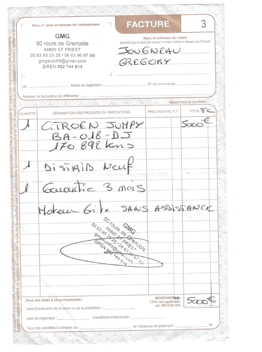

GMG auto
90 routes de grenoble 69800 saint priest
voici mon histoire avec gmg auto !
voici le chassis de ma voiture ! pour lui se ne sont que des traces de rouille ! rien de plus !
en vraie le chassis est rongé par la rouille !
 |
 |
 |
 |
 |
 |
et pourtant le vehicule présentait bien

maintenant que j ai toute votre attention je vais vous raconter mon histoire ;-)
vendredi 15 juillet je consulte les annonces le bon coin et tombe sur une annonce qui parait interessante.
j appel le vendeur et réalise une carte de 500e pour réserver le véhicule .
L'après-midi même je vais voir le véhicule sur place et en effet celui-ci est nickel pas d enfoncement pas de griffure intérieur propre extérieur propre kilométrage correct a 170000 km. Se véhicule avais tout pour plaire de l extérieur
Le 20 juillet je réalise un virement sur le compte du dit professionnel pour solder le véhicule .
Le 21 juillet le pro réceptionne le virement je vais donc récupérer le véhicule au garage pour le ramener a la maison
Une fois au garage le pro me donne les documents du véhicule et là dans ma tète sa fait tilt car sur le ct il est noté le mot corrossion !
Je demande donc au pro si c'est grave ?! Et celui-ci me retorque du tac au tac non c'est juste des traces de rouille ici et là y a rien à prévoir sur le véhicule .
Confiant je repars avec le véhicule le jour même .
à savoir que le véhicule n'a plus de centralisation la clé est HS et que la ventilation ne fonctionne pas.
Le pro s'engage à réparer la ventilation en septembre je me dit cool c'est un bon pro
Le 28/07/2022 en faisant des travaux de réparation sur le véhicule j'ouvre le compartiment moteur et me rend compte que tous le moteur et les injecteurs avec le support moteur sont rouiller.
Inquiet j approfondie mes recherches en levant la voiture avec un cric pour voir les dessous et la je me rends compte que le véhicule est rouillé de l'avant vers l arrière ! Tout le dessous du véhicule est rouiller !
Pas une seule partie n a été épargner
Je contacte donc immédiatement le pro qui me demande des photos. Je m execute et envoie des photos par sms. celui-ci c était engager à me rappeler le lendemain matin
Une fois le lendemain matin je rappelle le pro qui me dit qu il s'agit de trace de rouille comme il me l'avais dit ! (on a pas la même notion de trace de rouille )
Il ne veut pas annuler la vente ! et me propose un geste commercial sur le prix final du véhicule et il doit me rappeler l après midi même vers 14h
Je le rappel donc vers 14h et la il m'annonce qu il a envoyé les photos a des centres de contrôle technique avec qui il a l'habitude de travailler et que la réponse de ces centres serait que le véhicule passe le ct car il n'y a pas de rouille perforante !
Je retorque qu il est impossible que le véhicule passe le ct dans cet état et le menace de repasser un ct pour l'avoir en refuser et l'attaquer en justice pour vice cacher.
Sans suit une longue discussion avec de jolie mots ou a la fin il me propose de racheter le véhicule pour 4200e alors que je l'ai payé 5000e !

et pour finir les avis collecter sur le site page jaune !

libre a vous de lui faire confiance ou non